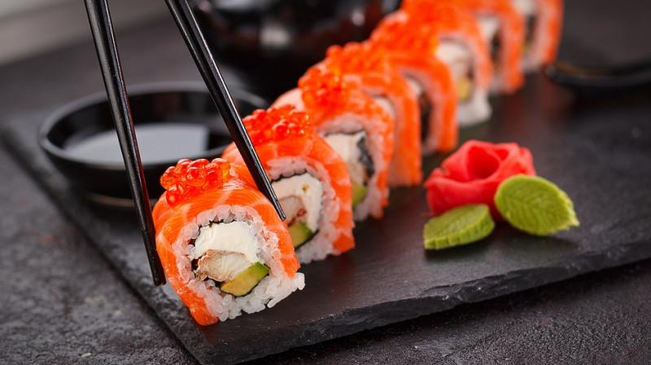

California Maki

About California Maki: A Description
California Maki is a delicious sushi roll that can be crunchy, juicy, and sweet at the same time.
Its main defining feature are it's fish eggs, which are usually orange salmon eggs.
Ingredients
Sushi Rice
- 1 cup Japanese Short-Grain Rice
- 1 1/4 cups Cold Water
- 3 tbsp Sushi Rice Vinegar
Sushi roll
- 2pcs ripe mango, sliced into strips
- 2 pcs avocado, sliced into strips
- 1 pc cucumber, sliced into strips
- 250 g kani (crab sticks), cut into half lengthwise
- nori sheets
- masago (orange fish roe)
- wasabi
- kewpie mayonnaise
Steps
Sushi Rice
- Rinse rice with water until drain water runs clear.
- Place rice and cold water in a small rice cooker and cook.
- Once cooked stand for 10 minutes covered in rice cooker.
- Place rice in ceramic bowl then slowly add vinegar while mixing the rice. Flatten rice in one thin layer to let it cool quickly.
- Set aside to cool in room temperature but keep rice covered with a damp cloth while preparing
Sushi Roll
- Place a sushi mat on a clean flat surface, place a sheet of cling wrap on top.
- Place a thin layer of rice on top of cling wrap, gently press it with a bamboo spoon then top it with a nori sheet.
- Spread a thin layer of wasabi on one side
- Arrange kani, cucumber, avocado and mango on top.
- Squeeze some kew pie mayonnaise on top.
- Now roll the bamboo mat starting at the edge while pressing it firmly, continue until it reaches the end of the bamboo mat.
- Remove the roll from the bamboo mat and carefully slice into 1-inch thick pieces, remove the cling wrap. Moisten the sharp knife every time you cut a new slice.
- Place your masago on a plate then roll each sushi slice on to the masago to coat the outer layer of sushi with it. Serve.